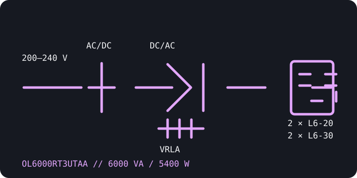

[ ONLINE DOUBLE-CONVERSION UPS // IDENTIFIED MODEL ]
CyberPower OL6000RT3UTAA
A TAA-compliant Smart App Online 6 kVA rack/tower UPS, rated 5400 W. The TAA SKU is separately identified from the similarly named standard OL6000RT3U; retain the full suffix when sourcing or maintaining the system.

ARCHIVAL IDENTIFICATION: Confirm the TAA product label and exact electrical nameplate; procurement compliance status does not change the need to verify supply, outlets and load ratings.
Exact model specifications
| Catalog category / topology | Online UPS — double-conversion, pure sine-wave output. |
|---|---|
| Electrical ratings | 6000 VA / 5400 W; configurable 200/208/220/230/240 V AC output. Verify the actual setting and permitted input range from the product label/manual. |
| Transfer behavior | 0 ms inverter transfer in normal online operation; bypass operation is distinct and must be managed per the user guide. |
| Receptacles / connectors | Two NEMA L6-20R and two NEMA L6-30R output receptacles; L6-30P input. Confirm the receptacle groups, voltage configuration and upstream circuit at installation. |
| Battery / runtime | Sealed lead-acid internal batteries, user-replaceable/hot-swappable as specified by CyberPower; compatible external battery modules can extend runtime. Manufacturer figures are approximately 5.4 minutes at full load and 15 minutes at half load; actual runtime varies with battery condition, charge, temperature and configuration. |
| Communication | LCD, USB, serial, relay and EPO interfaces; SNMP/network monitoring depends on the specified management option. CyberPower PowerPanel software supports compatible shutdown monitoring. |
| Compatibility / safety | For loads compatible with the configured 200–240 V output and within 5400 W. L6-20/L6-30 connectors require matching circuits and plugs; do not connect 120 V loads without an approved transformer. Observe battery, grounding and installation instructions. |
Manufacturer references
- CyberPower — OL6000RT3UTAA product pageManufacturer SKU listing, specifications and downloads for the TAA-compliant model.
- CyberPower — OL6000RT3UTAA datasheetManufacturer datasheet for electrical characteristics, interfaces and model configuration.